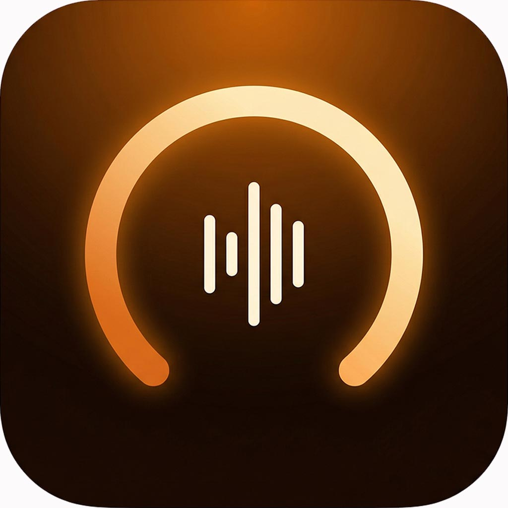
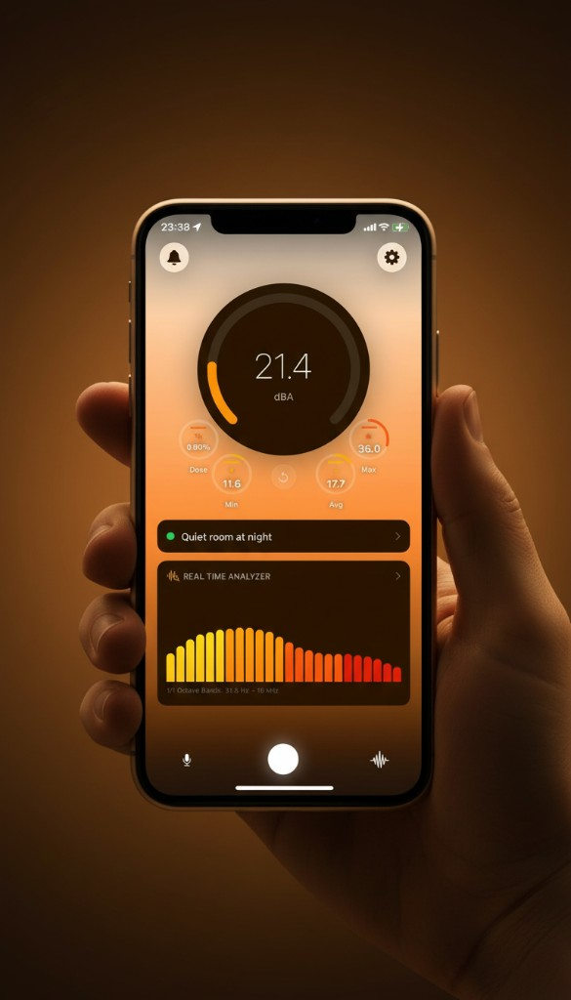
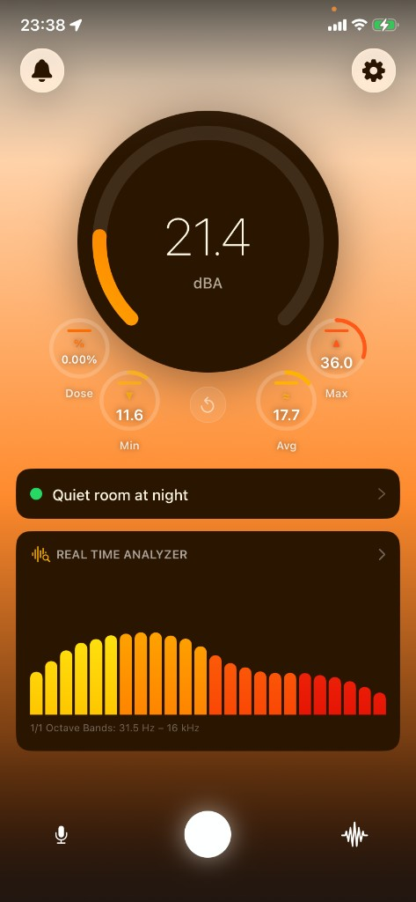
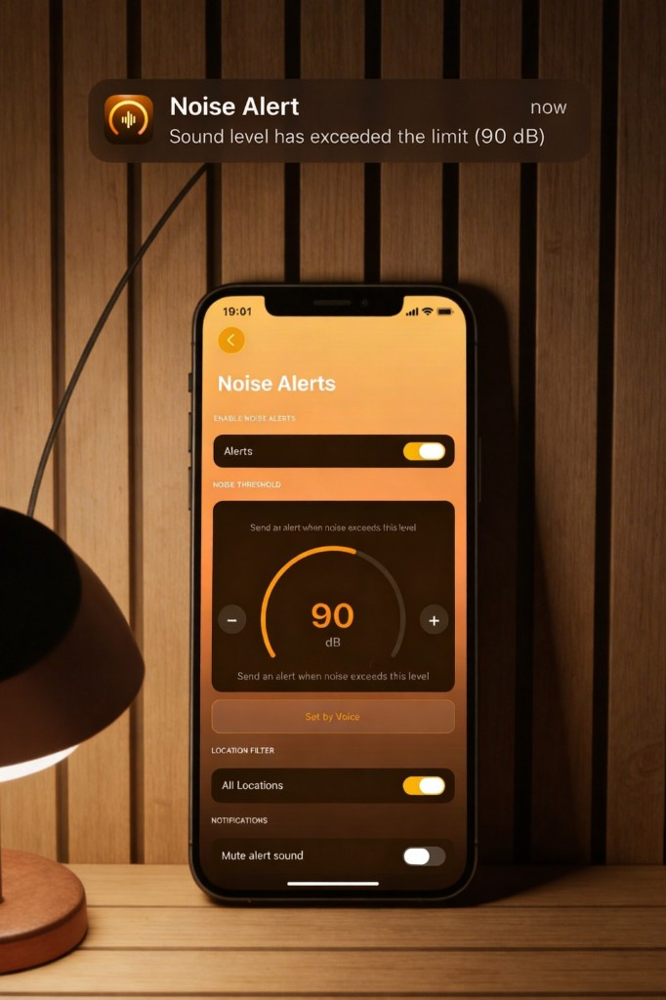
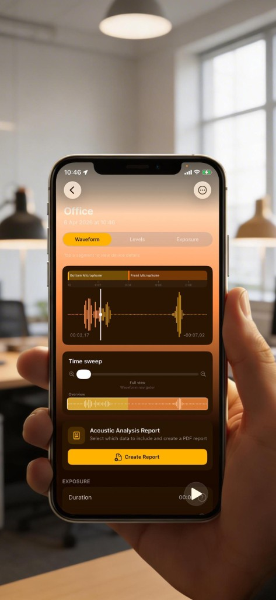
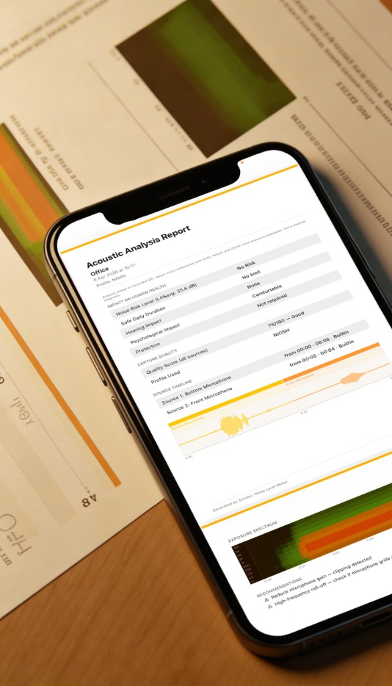

Professional noise measurement in your pocket. Real-time dB levels, frequency analysis, session recording, and acoustic reports — based on WHO and NIOSH standards.

Sondex turns your iPhone into a precision noise meter. See your current dB level the moment sound happens — along with Dose, Min, Avg, and Max metrics on one screen.

Choose from 1, 2, 3, 6, or 12 octave bands and see exactly which frequencies dominate your environment — live, color-coded bars covering 31.5 Hz to 16 kHz.

Set a custom dB threshold and Sondex will alert you the moment noise exceeds your limit — even while the app runs in the background. Location-based filtering lets you create different rules per place.

Save noise sessions and replay them as interactive audio waveforms — available on every plan. With Standard and Pro you unlock detailed sound level data; Pro adds source timeline, device diagnostics, and full telemetry for each recording.

Export a detailed PDF report for every session — including sound levels, exposure data, human health impact, source telemetry, frequency response, and personalized recommendations.
About
We sit in noisy cafes, work in open-plan offices, walk along busy streets — and rarely think about how all this affects us. Constant background noise drains your energy, reduces concentration, and over time imperceptibly affects your well-being.
Sondex helps you understand the sound environment around you so you can make better informed decisions about where to spend your time.
Full-featured acoustic measurement tool
Monitors total noise exposure during the session. Calculates time-weighted average and predicts an 8-hour workday impact based on NIOSH & OSHA standards.
Real-time frequency breakdown across 10 octave ranges. Identify low-frequency hum, high-frequency whistling, or midrange conversation noise.
Record any situation and analyze it later. Scroll the full audio signal, zoom into individual moments, see exactly when noise peaks occurred.
Switch between built-in, Bluetooth, or external microphones mid-session. Sondex records which source was active at each moment as an interactive timeline.
Export each session as a detailed PDF — all measured parameters, location data, device info, time breakdown, and automatic recommendations.
Manual or automatic offset correction. When measurement accuracy is important, you have full control over your microphone input.
Sondex analyzes your microphone during each session — detecting interference, wind noise, self-noise levels, and frequency anomalies. Every session gets a health score from 0 to 100.